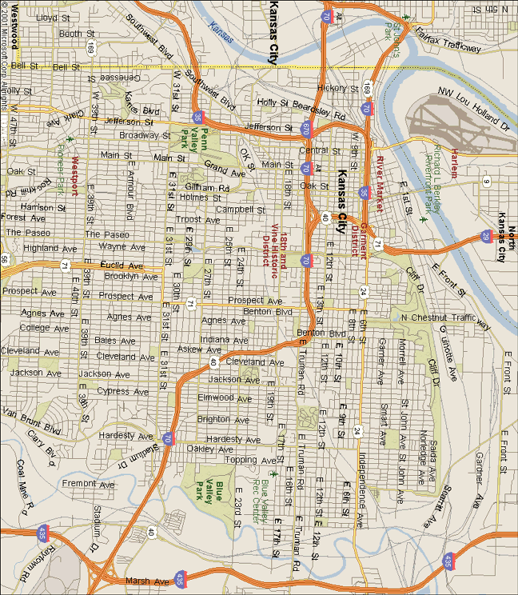

Urban Photo
Safari
Safari Grounds

| Copyright © 1988-2001 Microsoft Corp. and/or its suppliers. All rights reserved. http://www.microsoft.com/mappoint © Copyright 2000 by Geographic Data Technology, Inc. All rights reserved. © 2000 Navigation Technologies. All rights reserved. This data includes information taken with permission from Canadian authorities © Her Majesty the Queen in Right of Canada © Copyright 2000 by Compusearch Micromarketing Data and Systems Ltd. |